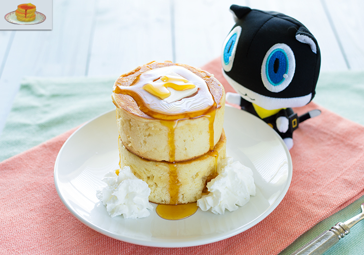

Persona 5 Pancakes
Index

Description
Did someone mention delicious pancakes?
Ingredients
- 2 cups (330g) cake flour
- 2 tsp (4.5g) baking powder
- ¼ cup (75g) honey
- 2 eggs, separated
- 1 tsp sugar
- 1 tsp (3g) salt
- 2 tsp (6g) vanilla extract
- 1 cup (250ml) milk
- ¼ cup (60ml) heavy cream
Steps
- In a bowl, combine cake flour and baking soda. In another bowl whisk together the egg yolks, honey, and salt. Add the vanilla extract, milk, and heavy cream.
- In the bowl of a stand mixer place the egg whites and sugar. Whisk until stiff peaks form, about 2-3 minutes.
- Take a third of the egg white mixture and whisk it in to the egg yolk mixture. Sift in half of the cake flour mixture and whisk until combined.
- Add another third of the egg whites and gently fold it in with a spatula. Gently whisk in the remaining cake flour. Finally fold in the remaining egg whites. Make sure to fold in the mixture completely but do not overwork it. You do not want to lose all that air you introduced in the egg whites.
- Place a large frying pan with 2.5 inch round cookie cutters over medium heat. Coat the pan and round cutters with non-stick spray. Fill each cutter just under ¾ of the way up with the pancake batter.
- Cover with a lid and cook until the batter reaches the top of the cookie cutters and the bottom is golden brown. Using a spatula and oven mitts carefully flip the cookie cutters over. This can be tricky – if you don’t get it all the way the first time just push them over and they’ll cook just fine.
- Do not cover the pan again. Allow these to cook on this side until golden brown, between 4-5 minutes. Carefully remove the pancakes from the cookie cutters by loosening with a knife. Serve with butter and syrup.